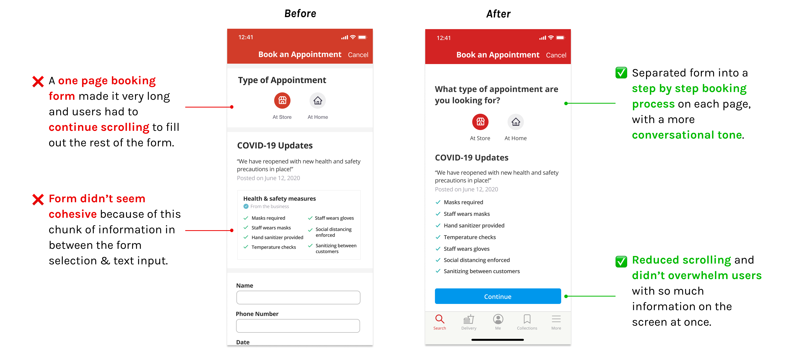
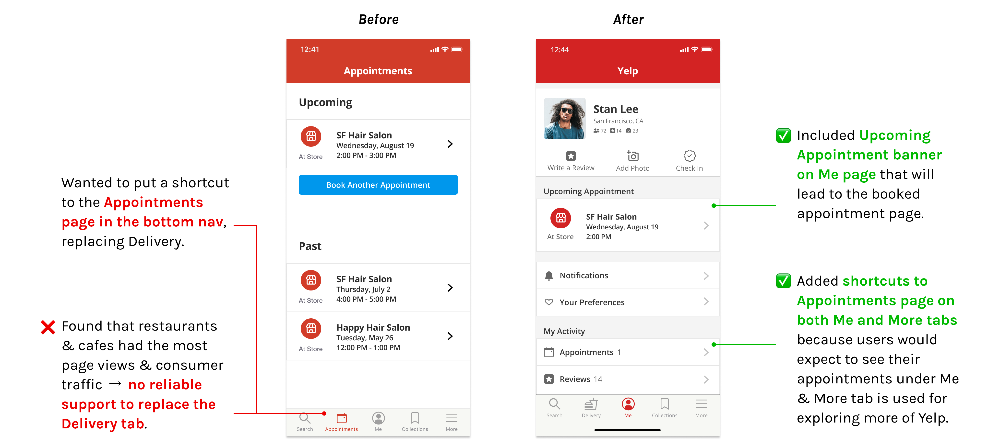

üå∏ Overview
Expanded on the Yelp appointment feature to streamline the process of booking at store & at home appointments.
My Responsibilities: Conducted user research & usability testing, created personas, paper prototypes & iterated on low to high-fidelity prototypes.
Duration: Jun - Sep 2020 (10 weeks)
Role: Product Designer
Tools: Figma, Marvel, Miro
üìñ Background
Last summer, I participated in Design Co's Level Up fellowship. Level Up is a 10-week design program that provides students with the opportunity to tackle a real-world challenge under the guidance of industry mentors.

My team decided to focus on Designing for Small Business Recovery. We wanted to explore possible solutions to help businesses impacted by COVID-19, as a way to give back to these services that have played a huge part of our daily lives.
❓ Problem
How is COVID-19 affecting small businesses in the personal services industry?
As people are adjusting to the new norms of everyday life during the pandemic, a lot of small businesses are struggling to make ends meet as they are seeing a decline in their customers and as a result, their finances. There’s a fair amount of uncertainty over COVID-19 for both the customers and workers of small businesses, and it’s resulted in an increasing sense of distrust on the customer side, and an overall disconnect between the two.
“It would be nice if there’s any way to announce our cleaning protocol is 100% in effect so we can rebuild some trust with our customers.”
ü§î Why Personal Services?
After conducting some background research, we decided to focus on the personal services sector for several reasons:
Negatively impacted
They're one of the top 3 industries most negatively affected by the pandemic.
Online presence
They could benefit from creating an online presence or from transitioning to a digital platform.
No immediate solutions
Most solutions are focused on the food & restaurant industry, not personal services.
üó£ User Research
Small Businesse‍s
We wanted to hear about some of the real obstacles that small business owners are struggling with in their day to day since the pandemic started. We were able to interview and routinely talk to 4 small business owners over Zoom.
They told us about their challenges and concerns over their ability to work and continue to run their businesses.
Consumers
We also asked consumers why they are not resuming use of personal care services and posted surveys on social media platforms, such as Reddit and Facebook groups, to reach more users and grasp a better understanding of their pain points. These included:
Small businesses are taking one of the biggest hits from the pandemic. It was apparent that COVID-19 created a rift of disconnection between small businesses and their customers, leaving them both in a place of apprehension.
üîç Narrowing our Scope
After conducting user research, our main findings helped narrow down our problem statement. Consumers aren’t sure of how small businesses in personal services are taking precautions against COVID-19, while owners of small businesses have lack of experience and have put creating an online presence in the back burner of other COVID-19 obstacles.
How might we bridge the distrust between customer and business through an online presence?
üí° Ideating & Concept Testing
Our initial idea was a discovery platform & directory where customers can look for nearby personal service businesses and be able to get information and book appointments from there. Small business owners could also directly register their business onto the platform - an online presence made easy.
Paper prototype uploaded to Marvel
Low-fidelity wireframe in Figma

I sketched out low-fidelity paper prototypes and conducted user testing using Marvel. But through the first rounds of user testing, 75% of our users felt limited when using the app. They needed to find more value in the app and only understood part of the concept - locating businesses, instead of informing the public of small businesses in personal care and how they are adjusting to the new norm with their services.
Since not a lot of users found this app valuable enough to download it in the app store, we knew we had to reorient our direction.
üöÄ Building on Yelp
We chose to create new opportunities on Yelp because it has a high existing user base, with over 28 million downloads a month.
Already connecting people to their local businesses, improving upon the interactiveness and communicative aspect of their existing appointment feature was something we saw great potential in.
Yelp currently offers two options regarding appointments:
- Requesting an appointment (similar to requesting a quote)
- Booking through a third party app (which isn't available to all businesses)

“I really like this because it feels like it offers everything. I don’t have to go to a different website to check COVID updates, hours and book appointments.” - User Testing Participant
üìù Our Proposal
01Book appointments in app
Allow users to book appointments directly in the Yelp app, integrating the feature on the business page.
02At Home appointments
Offers a new option to book an appointment to take place at the comfort of your own home.
03Gift cards
Allow users to purchase gift cards in-app to increase cash flow due to less customers coming in.
üë©ü誂Äçüíª Testing our iterative designs
After we conducted user testing on our mid-fidelity prototype, we made some changes to improve our designs based on the feedback we received, since we wanted every iteration to be user driven.
At Home Appointments
We wanted to present the information for At Home Appointments in a way that didn't overwhelm the user, but also adhered to Yelp's design system.
Book an Appointment
We originally had a one page booking form, but after user testing, we decided to change it to a step by step booking process with less questions on each page.
View Appointments
We were considering many different options on where we should put the page to view and manage appointments. We conducted more research around our ideas and it helped us finalize our design decision.
Gift Cards
We also wanted to add a way to buy gift cards onto the business page directly, instead of finding deals and offers in the More tab.

✨ Final Design
A seamless booking process directly in the Yelp app
Including options to have your appointment at store or at the comfort of your home.

Three different ways to view your booked appointment
- On the business page, with a View Appointment banner
- On the Me page, with an Upcoming Appointments banner
- On the More page

Purchase gift cards & deals in-app
To further financially support businesses, we added a Deals & Offers banner directly accessible on the business page.
Users can purchase gift cards and other deals in the app, helping businesses increase their cash flow during these difficult times.

After our 10 week sprint, we presented our slidedeck to industry professionals and the other Level Up participants at the final showcase, and walked them through our final prototype. We were awarded "Thoughtful Adoption Strategy" for our thoughtful and seamless concept integration into Yelp that would be beneficial to both small business owners and Yelp.
üí≠ Takeaways
- Learned the importance of staying open-minded as a designer.
Even though our initial concept didn’t work out with users, we didn’t stay tied to that idea. We were open-minded and rethought it quite a bit. We pivoted midway through the project to come up with our solution to build on Yelp.
- Don't reinvent the wheel.
Users already had an existing solution that worked well for them (Yelp), so we decided not to build something from scratch. Instead, we found opportunities to expand on the app by streamlining the appointment booking process.
- Learned how to recreate a design system and seamlessly integrate new features.
Yelp had a public design system on their site, but it was really outdated since they recently updated and revamped their app. I recreated their design system with the current app's colors, typography, text hierarchy, button styles, and etc., and I learned how to work within an existing complex design system to integrate new features.
üå± Next Steps
If we had more time, we would explore more features we could potentially add to our prototype, such as:
- Include an indicator on the booking form to let users see their progress in completing the booking process
- Ideate more for Edit Appointment page to allow users to easily change their appointment
- Add employee shifts information to ensure customers can see they're spaced out from another
- Look more into the business owners' side on Yelp -- we only had access to the consumer side, but I want to see how our designs would impact business owners and if it's feasible to implement from their end as well!